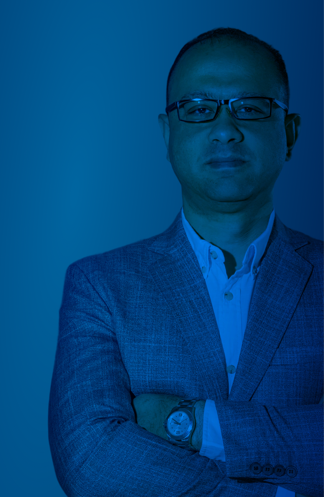
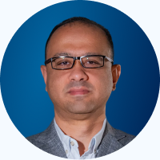
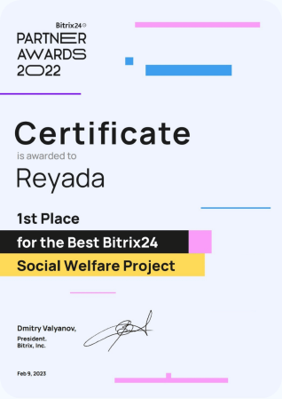
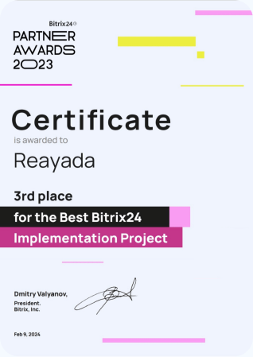
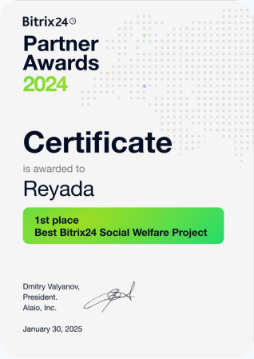
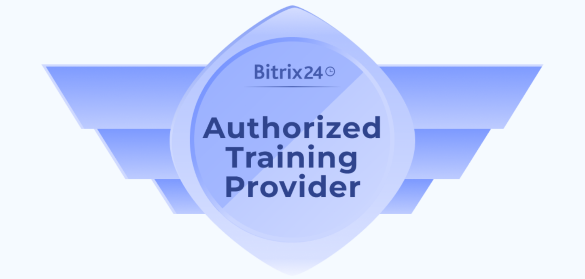

Success Stories

This story details the journey of Reyada Business Services & Consulting Co., a Bitrix24 partner since 2018. What started as a consulting-focused approach grew into a strong driver of digital transformation across the MEA and African regions.
By combining their industry knowledge with the flexibility of Bitrix24, the team created customized solutions, earned the trust of clients in 12+ countries, and completed over 110 successful projects.
Their experience shows how consistency, dedication, and the right partnership can deliver real business results.

What were your expectations at the beginning of the partnership?
Our expectations were high. We understood both the market demand and the value of Bitrix24, and we recommended it as a budget-friendly solution for small companies beginning their digital transformation.
The results proved the decision right – we saw startups and SMEs rely on Bitrix24 and achieve real improvements quickly. We also became the first partner in Egypt and started the journey with the Bitrix24 team here from day one.
How long have you been
a Bitrix24 partner?
We've been working as Bitrix24 partners for 8 years now, since 2018.
What motivated you to become a Bitrix24 Partner?
The growing need for IT solutions in 2017–2018, combined with our position as a trusted consulting firm, allowed us to recommend Bitrix24 CRM to many clients in the sales consulting field.
Later, we saw the real value of the product and officially started the partnership in 2018 as a Bronze Partner. We quickly became Silver, then Gold, and built our customer base from there.
How did you start selling Bitrix24 to your clients?
As part of our sales consulting services, we recommended Bitrix24 as a tool to support sales management. Later, we began handling the implementation and support ourselves and officially became a partner. Our first client was GeoEnergy, and they remain a client to this day.
How is your process of attracting new clients structured now?
We use several approaches: our website and LinkedIn page generate consistent leads, and since 2024 we've launched a YouTube channel and a series of webinars in Arabic. As we expand our presence, we now also have sales teams for French- and English-speaking Africa.
Which tools and resources from Bitrix24 have been most useful to you?
The Implementation App and direct referrals have been valuable resources for us.

What results have you achieved during your partnership with Bitrix24?
We've reached a milestone of more than 110 clients in almost 5 years. We are now an established partner in the region, serving Egypt, Saudi Arabia, UAE, Lebanon, Jordan, Libya, Uganda, Senegal, and several other countries. We've worked with major governmental and banking organizations – sectors that are typically very hard to enter. We have two apps published in the marketplace, became an Authorized Training Provider, won Bitrix24 Awards in 2022, 2023 and 2024, and maintained Gold Partner status for 5 consecutive years.
Can you share specific numbers or examples of success?
What impact has our partnership had on your business?
We became experts in customizing Bitrix24 solutions for different industries and unique customer needs. Many of these custom solutions later became standardized offerings for clients in similar sectors. For us, this has always been a consulting-driven partnership, not just product reselling.



What are the main advantages you see in partnering with Bitrix24?
As a Bitrix24 partner since 2018, we've seen the platform constantly evolve to meet the needs of SMEs while staying scalable and cost-effective. This flexibility allows us to deliver tailored, high-value solutions across more than 19 industries and many countries. Bitrix24 enables us to combine business consulting with technology to drive real digital transformation.
How satisfied are you with our partnership overall?
We are very satisfied and appreciate the continuous support provided by the Bitrix24 Partner Team. Their programs, enablement initiatives, and communication have been essential to our growth – from becoming a Bronze Partner in 2018 to achieving Gold by mid-2020, now serving over 110 customers worldwide.

What advice would you give new partners?
Be consistent, proactive, and committed to understanding your clients' real business needs. Bitrix24 offers great potential, and the more you invest in mastering the platform and aligning it with customer goals, the more rewarding the results will be.
What mistakes did you make at the beginning and how can they be avoided?
At first, we didn't fully understand the platform's potential and the opportunities it could open. We corrected this early by dedicating teams to explore the product, integrations, development possibilities, and extensive customization options.
This helped us approach every request as a chance to improve and innovate.

Sign up for the Bitrix24 Partner Program!
Sign up